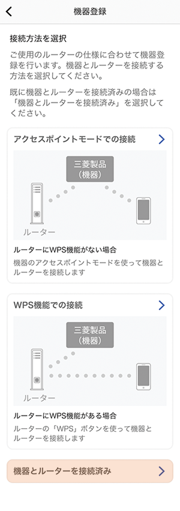
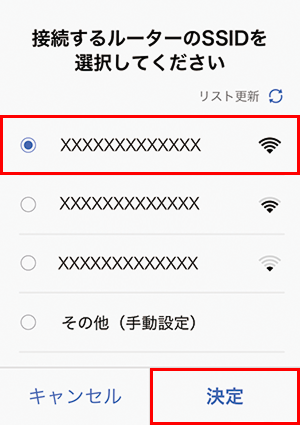
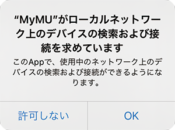

すでに機器とルーターを接続済みの場合、「機器とルーターを接続済み」をタップして「スマートスイッチ（ファン用）を登録する（WPS）」に進んでください。
半角記号は !#$%&'()*+-./:;<=>?@[]^_`{¦}~ に対応しています。ダブルクォーテーション（"）、カンマ（,）、バックスラッシュ（＼）、￥マークには対応していません。
接続するルーターのSSIDを選択し、「決定」をタップする
iOS搭載のスマートフォンでは、次のメッセージが表示されることがあります。その場合は「OK」をタップしてください。「OK」をタップしないと接続に失敗します。「許可しない」をタップした場合は、iOSのローカルネットワークの設定を変更してください。
約5秒以上長押しするとWi-Fiランプが点滅し、遠隔操作が無効になります。
約2秒間押すとWPSモードになります。
スマートスイッチの電源をリセットできます。機器異常の場合にご使用ください。
ランプが示す状態は以下のとおりです。